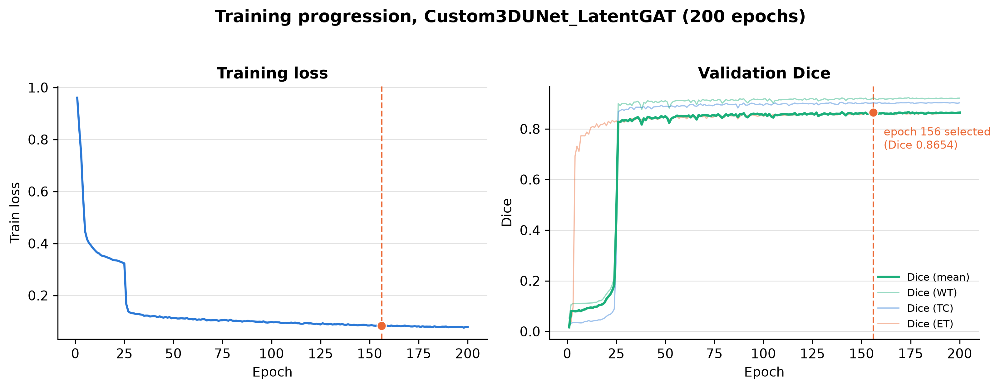
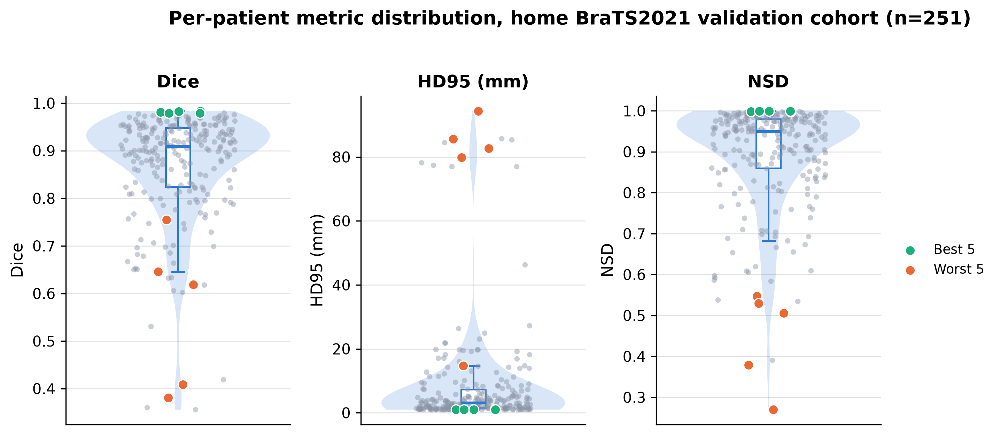
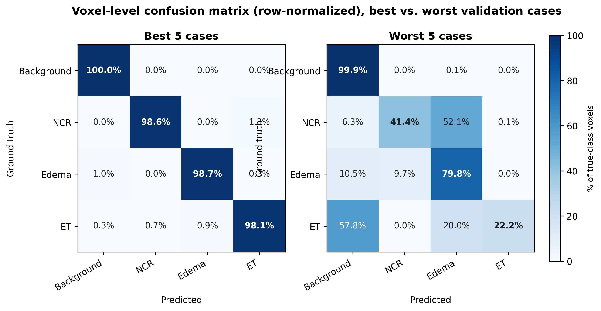
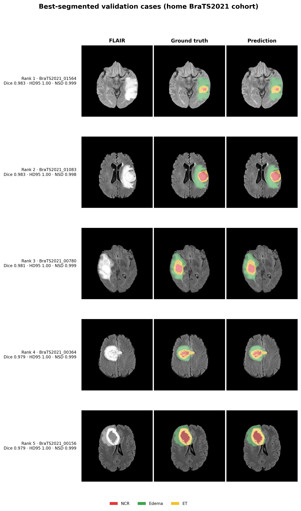
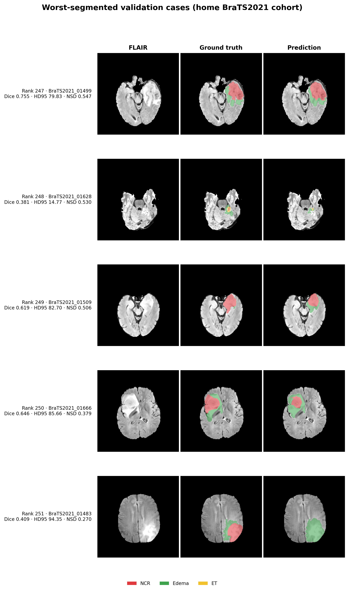
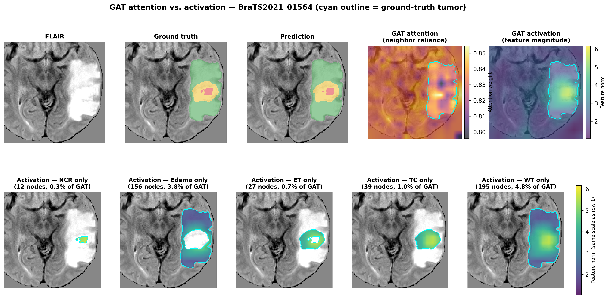
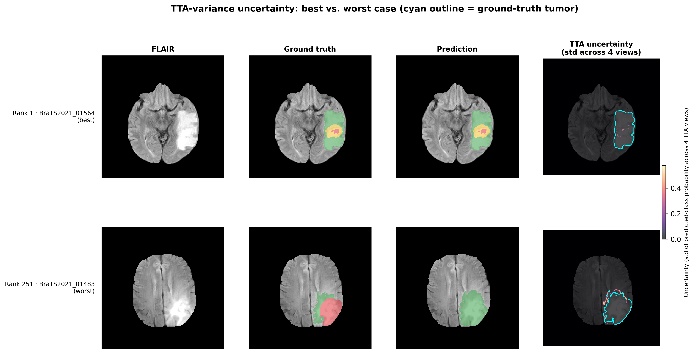
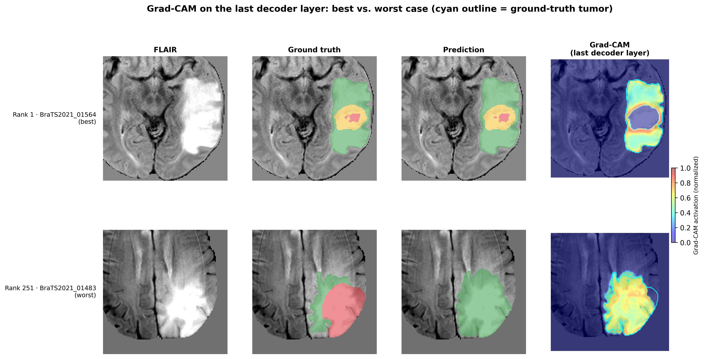
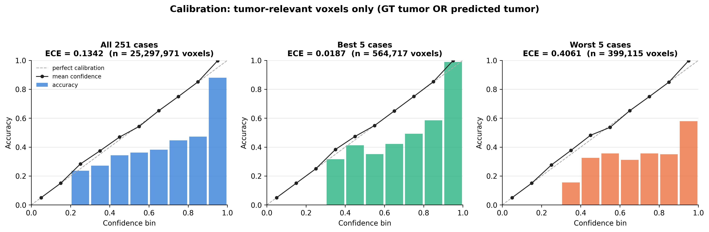

Epoch 156 checkpoint (selected by combined Dice+HD95+NSD rank across all 200 epochs), evaluated on the 251-patient home BraTS2021 validation split with sliding-window inference (overlap 0.625, constant blending) and 4-view test-time augmentation.
Loss converges sharply around epoch 25; validation Dice plateaus shortly after. Epoch 156 was picked by combined rank rather than peak Dice alone — the single best-Dice epoch is 174 (0.8662), just 0.0008 higher, chosen against for its slightly weaker HD95/NSD balance.

A mean±std hides the shape of the spread. The violin shows the full distribution across all 251 patients; best 5 and worst 5 sit at the genuine tails, not as isolated outliers picked to look good or bad.

Voxel-level confusion matrix (row-normalized): all 251 cases, then best 5, then worst 5. The NCR→edema confusion isn't unique to the worst cases — it's a real, cohort-wide tendency (11.7% of NCR voxels across all 251 patients), just far milder than the worst-5 extreme (52.1%). The worst cases are an intensified version of a pattern that exists everywhere, not a different failure mode entirely.

The 5 highest combined-rank patients — large, well-circumscribed, strongly contrast-enhancing tumors with clear boundaries. Dice > 0.978 and HD95 ≈ 1mm across all five.

Ranks 247–251 show a specific, nameable failure mode: in two cases the model predicts edema where the ground truth is necrotic core — a class-confusion error, not just a boundary miss. One case (rank 248) is a genuinely tiny lesion where a few voxels of disagreement dominate the Dice score.

Two different signals read out of the same forward pass on the rank-1 case: attention weight (how much a bottleneck node's representation leans on its graph neighbors) and activation magnitude (how large the GAT's output actually is at that node). They are not the same thing — across all 4,096 bottleneck nodes the two are essentially uncorrelated (r = 0.02). Attention stayed nearly flat everywhere; activation is what actually concentrates on the tumor. Breaking activation down by BraTS region shows it further: NCR (0.3% of all nodes) carries the highest activation, while edema (3.8% of all nodes, by far the largest region) stays low despite covering the most area — activation tracks pathological specificity, not region size. NCR's number rests on only 12 nodes, so it's the least statistically solid of the five and is reported as a directional finding, not a precise estimate.

The 4-view test-time augmentation already run for every evaluation in this project doubles as a free uncertainty signal: per-voxel disagreement across the 4 augmented predictions. Visually it behaves as expected — uncertainty concentrates in a thin rim at the tumor boundary and stays near zero elsewhere, more so in the worst case than the best. But the actual reliability check tells a different story: on the worst case, voxels the model gets wrong have a mean uncertainty of 0.0000018, roughly 600× lower than the 0.0011 mean on voxels it gets right (n = 79,909 wrong vs. 8,848,091 correct, accounting for every voxel in the volume). The model isn't hesitant where it's wrong — it's confidently, consistently wrong across all 4 views. That matches the systematic NCR→edema confusion from the confusion matrix above: since that error doesn't depend on how the image happens to be oriented, flipping it doesn't perturb the model's answer, and TTA-variance is structurally blind to exactly this failure mode. A clinician trusting "low uncertainty means trustworthy" would be misled precisely on the voxels where this model is systematically wrong.

Attention and activation above only describe the GAT bottleneck in isolation. Grad-CAM on the last decoder layer — full resolution, right before the final output — shows what the whole network (encoder, GAT, decoder, skip connections together) actually used to reach its answer, backpropagated from total predicted tumor probability. The two cases produce different shapes for a specific reason: the best case's CAM forms a ring with a low-activation hole over the tumor's confident interior, while the worst case's CAM is one undifferentiated blob covering the whole (wrong) prediction. That shape difference explains an otherwise counterintuitive number: raw CAM/GT Dice overlap is higher on the worst case (0.860) than the best case (0.627), not because the attribution is "better" there, but because a ring structurally overlaps less with a full tumor mask than a solid blob does. Both CAMs stay tightly localized (2.1% and 4.2% of the crop volume respectively), confirming the signal is spatially specific rather than diffuse.

When the model reports X% confidence on a tumor-relevant voxel, is it actually right X% of the time? Computed on the full 251-patient validation set as the primary panel — unlike the other explainability figures, calibration is a population statistic, and a best-5/worst-5-only sample can't answer it honestly. The result is a clean gradient that confirms, with a number, what the confusion matrix and TTA-uncertainty sections already found: Best 5 cases are well-calibrated (ECE = 0.019, 96.9% accuracy vs. 98.8% confidence — a ~2-point gap). All 251 cases sit at moderate miscalibration (ECE = 0.134, 83.4% accuracy vs. 96.8% confidence). Worst 5 cases are severely miscalibrated (ECE = 0.406): the model reports 94.9% mean confidence while being correct only 54.3% of the time — a 40-point gap. Confidence barely drops between the best and worst cases; accuracy collapses. That's the same "confidently wrong" pattern the TTA-uncertainty section found (600× lower uncertainty on wrong voxels), now with a population-level number attached: calibration quality tracks segmentation quality almost linearly, and it's worst exactly where the model already has a known, systematic failure mode.
